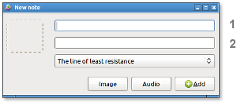
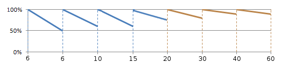

Idiomind is a tool for language learners seeking to enhance their language skills.
Note: A word or sentence of up to 150 characters.
Topic: A list of notes, preferably related. For example, "The neighborhood."
The program allows you to save words or sentences in a list called a Topic. You can manually add your own translations or use an online translator for automatic translations.

Please note: In the upper text field (1), enter the text in a foreign language.
In the lower text field (2), enter the text in your native language.
Tip: Select a portion of text from any source and click on "Add" to add it.
To add an image to a note using screen clipping: Click on the "Image" button, select a region by clicking and dragging the mouse from one corner of the desired region to the other, release the mouse button to capture the selected region.
Other ways to add text:
Colors are used to indicate grammatical elements.
| pronoun | verb | adjective | preposition |
| adverb | conjunction | noun or adjective | noun or verb |
The program notifies you to review a topic periodically.
The time intervals between reviews increase from 6 days to 2 months as follows:

| New topics | Mature topics | [0%-100%] Estimated memory retention | [6-60] Days |
Icons legend for reviews:
| new | mature | learnt |
| reviewing | to review | to review, second notice |